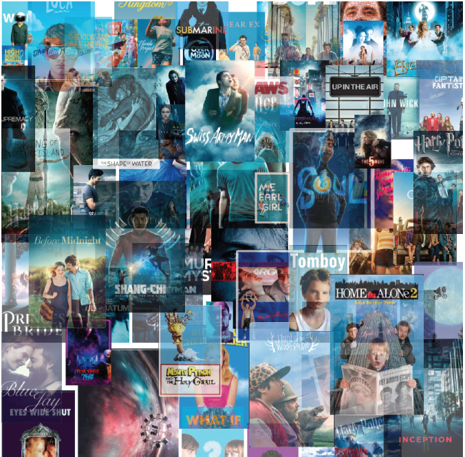
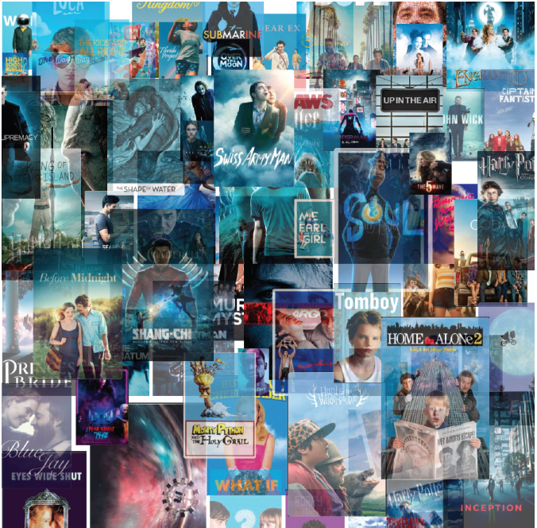
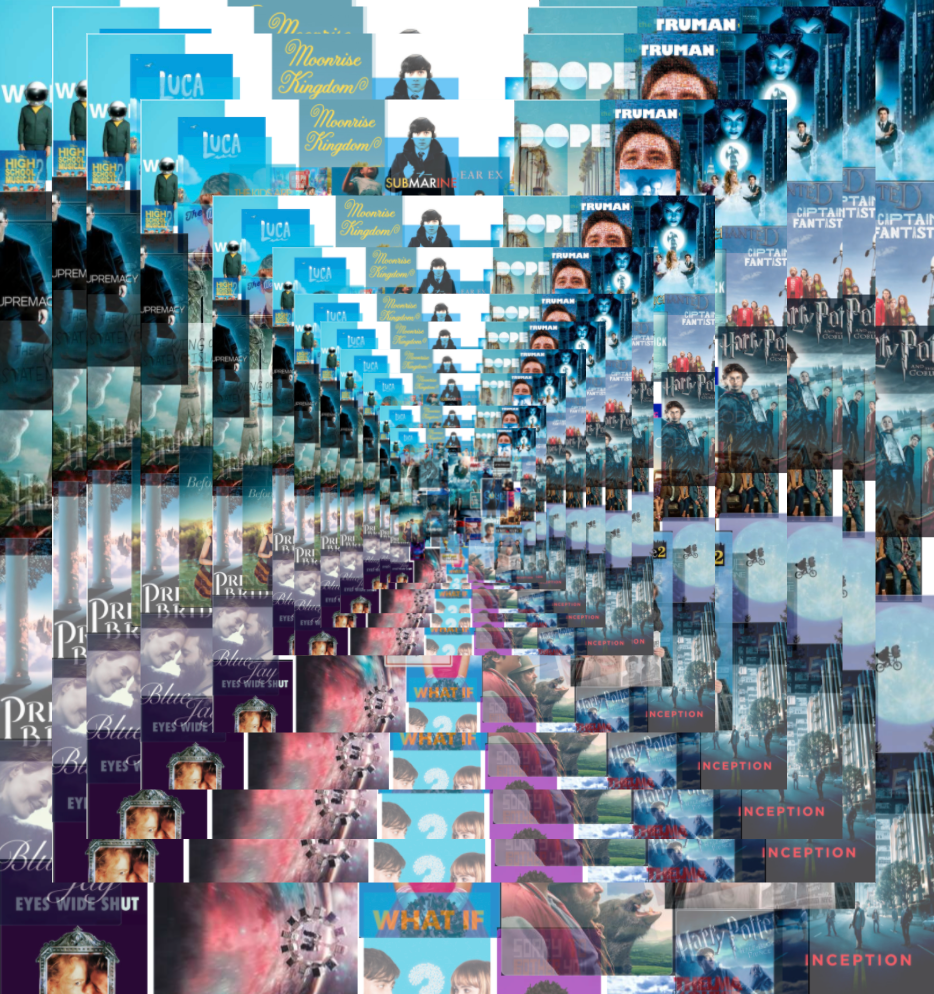
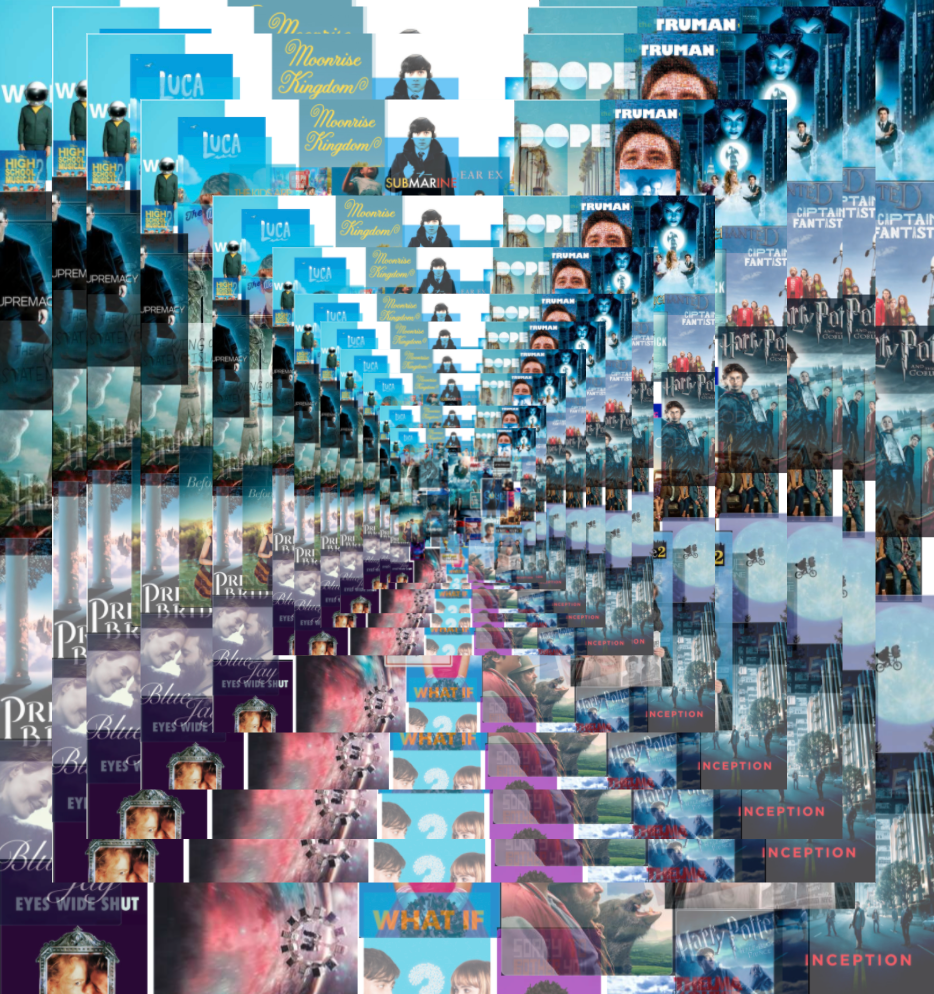

In these first steps, I looked towards letterboxd and all the films I had logged in over the past two years (since the start of Covid lockdown in March 2020). I found the posters on their own to be a great visual representaion of an escape, as each colour in their regtangular spaces gave its own voice. I knew I wanted to take advantage of this arragement and play with the movie posters, leading me to take screen shots in the following explorations.
After creating simple compositions that explored layering, I wanted to go a step further by producing work that spoke to the feeling of staying home and watching movies during the pandemic. More specifically, being sucked into a film, and its world. Thus, I began playing with warping and turning the individual posters as I worked my way through the collage. I furthered my exploration in layering the collage over and over, as well as explored a blurring effect.
 

 

Taking my previous work, I kept develping more and more concepts. These next few examples showcase the building blocks that lead to my final work. Taking these collages, I began visualizing a textile, or mosaic approach to how these pieces might come together in telling a story. Using these coloured collages to develop even further, in a way that could work to create a dynamic and interesting composition. I found that when flipped these collages can connect and create beautiful patterns.
I took these collaged squares making them smaller and smaller; connecting them to create a X formed pattern. I found this approach best told the story of watching movies during the pandemic, resembling the feling of an escape. Throughout the pandemic I found myself using movies as an escape from reality. I wanted to display this through creating small squares that get morphed to the point of not really understanding unless you get really close. I enjoy how the variety in colour and direction, allows for the eye to explore the composiition. It reminds my of a patch quilt and how each square can symbolize something different.